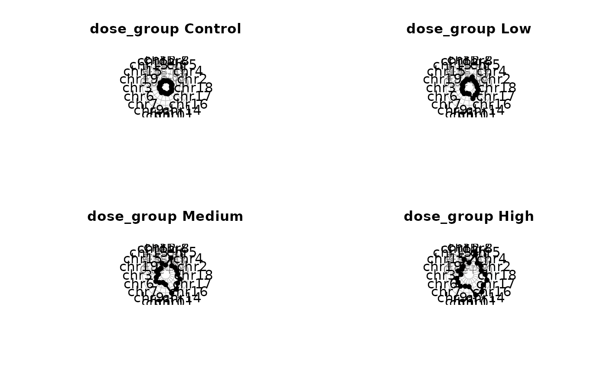

Create a radar plot
Examples
# Plot the mean MFmin of each genomic target per dose group
# Order the genomic targets by their genic context.
#Load the example data and calculate MF
example_file <- system.file("extdata", "Example_files",
"example_mutation_data_filtered.rds",
package = "MutSeqR")
example_data <- readRDS(example_file)
mf <- calculate_mf(mutation_data = example_data,
cols_to_group = c("sample", "label"),
retain_metadata_cols = c("dose_group", "genic_context"))
#> Performing internal depth correction to prevent double-counting...
#> Internal depth correction complete.
#> Joining with `by = join_by(sample, label)`
#> Joining with `by = join_by(sample, label)`
# Define the order of the genomic targets
label_order <- mf %>% dplyr::arrange(genic_context) %>%
dplyr::pull(label) %>%
unique()
# Calculate the mean MF per dose_group for each target.
mean <- mf %>%
dplyr::group_by(dose_group, label) %>%
dplyr::summarise(mean = mean(mf_min))
#> `summarise()` has grouped output by 'dose_group'. You can override using the
#> `.groups` argument.
# Set the order of each column
mean$dose_group <- factor(mean$dose_group,
levels = c("Control",
"Low",
"Medium",
"High"))
mean$label <- factor(mean$label,
levels = label_order)
# Plot
plot <- plot_radar(mf_data = mean,
response_col = "mean",
label_col = "label",
facet_col = "dose_group",
indiv_y = FALSE)
#> Loading required namespace: fmsb
#> Warning: "sep" is not a graphical parameter
#> Warning: "caxiscol" is not a graphical parameter
#> Warning: "sep" is not a graphical parameter
#> Warning: "caxiscol" is not a graphical parameter
#> Warning: "sep" is not a graphical parameter
#> Warning: "caxiscol" is not a graphical parameter
#> Warning: "sep" is not a graphical parameter
#> Warning: "caxiscol" is not a graphical parameter
#> Warning: "sep" is not a graphical parameter
#> Warning: "caxiscol" is not a graphical parameter
#> Warning: "sep" is not a graphical parameter
#> Warning: "caxiscol" is not a graphical parameter
#> Warning: "sep" is not a graphical parameter
#> Warning: "caxiscol" is not a graphical parameter
#> Warning: "sep" is not a graphical parameter
#> Warning: "caxiscol" is not a graphical parameter
#> Warning: "sep" is not a graphical parameter
#> Warning: "caxiscol" is not a graphical parameter
#> Warning: "sep" is not a graphical parameter
#> Warning: "caxiscol" is not a graphical parameter
#> Warning: "sep" is not a graphical parameter
#> Warning: "caxiscol" is not a graphical parameter
#> Warning: "sep" is not a graphical parameter
#> Warning: "caxiscol" is not a graphical parameter
